02-1-数据库基础知识
什么是数据?
数据就是数值，也就是我们通过观察、实验或计算得出的结果。
数据有很多种，最简单的就是数字。
数据也可以是文字、图像、声音等。
我们打游戏最怕什么？最怕被盗号，怕自己的账号，密码丢失。
打游戏时候，腾讯为了保护大家的账号安全，提供了密保卡，进行坐标验证登录。
于超老师曾经也是一个DNF玩家。。登录的账号，密码，即为数据，那么dnf这么大的游戏平台，N多的账号密码要进行存储，就定有数据库仓库，称为数据库。
数据存储
很早很早以前，古人是这么存数据的
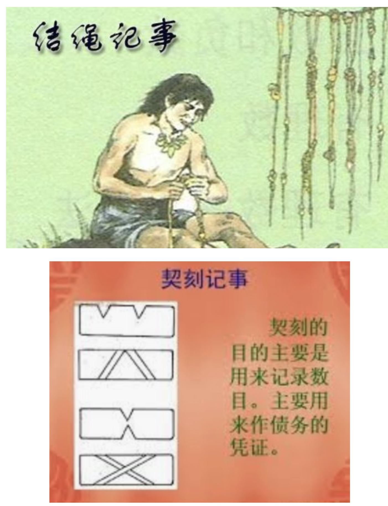
结绳、契刻、结珠、石头替代法等等，如今纸张是人们广泛使用的信息载体。但是书籍不便于查询、共享、储藏等缺点。
随着计算机的发展，人们将信息转化为二进制数字，存储在磁性存储介质中，也就是磁盘进行数据记录。数据通过文件系统管理，以文件形式显示出来。
但是大量的文件数据，查询内容，还是很不方便。
在这个背景下，一个专门用于数据管理的工具诞生了，它能让我们更简单的管理数据。
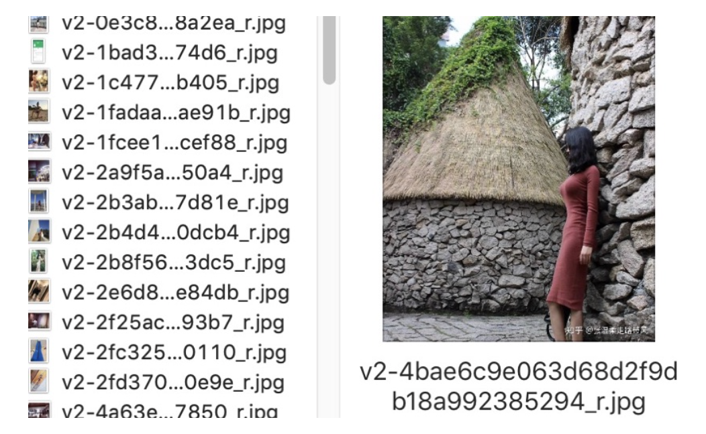
什么是数据库
顾名思义，数据库(DB，database)按照数据结构来组织、存储和管理数据的“仓库”，是一个文件或者一组文件。
表是数据库中存储数据的基本单位，数据按照分类存储在不同的表中，便于查询。
数据库可以通过统一的一些指令对数据进行增、删、改、查（Create，Retrive，Updata，Delete）等操作。
例如财务人员使用Excel统计公司资产信息，进行管理，计算账户，Excel是微软推出的一款电子表格软件，提供计算和图标展示。
例如工资计算
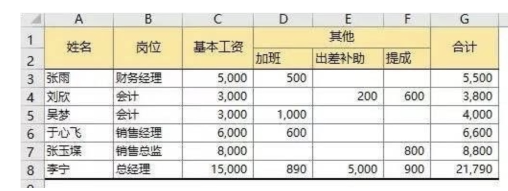
Excel很强大，但是对于企业来说，业务需求庞大，用Excel可能会有成千上万张，并且存储管理很麻烦，员工和客户想要实时知道企业数据，不可能把一个巨大无比的Excel发送给用户。
因此数据库软件应运而生。
DBMS
Database Management System，数据库管理系统
数据库管理系统这一软件用于创建和操作数据库。
主流数据库软件，如Mysql(免费)，Oracle(收费，甲骨文公司)，Microsoft SQL Server、SQLite（轻型）等。
mysql主要用于大型门户，例如搜狗、新浪等，它主要的优势就是开放源代码，因为开放源代码这个数据库是免费的，他现在是甲骨文公司的产品。
oracle主要用于银行、铁路、飞机场等。该数据库功能强大，软件费用高。也是甲骨文公司的产品.
sql server是微软公司的产品，主要应用于大中型企业，如联想、方正等。
数据库，简而言之就是有组织的存储数据的一个仓库（本质就是文件信息管理）。
如同冰箱存储食物，衣柜存放衣物。超哥每天登陆QQ，微信，查询支付宝余额，银行卡余额，都是软件去读取查找数据库记录。
超哥日常生活，一直一直在使用数据库管理软件，譬如电话簿里找名字，百度搜索"如何变有钱"也是在用数据库。
数据库基础知识
首先mysql前面超哥已经多少带着大家接触过，安装过、使用过，大家心中有一个基础的认识
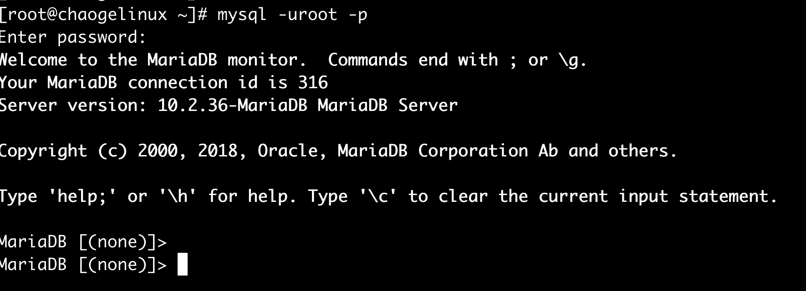
运维和数据库
说白了，数据库就是存数据的，是一款软件，用专门的数据库语言，增删改查数据。
这就好比超哥平时对电脑里的数据管理
- 多个文件夹，分类管理
- 文件夹里的文件，数据，照片，视频，游戏
超哥在公司里，和开发对接，对数据进行管理
数据库的形式
- 自己再linux上，直接安装，例如上图，数据都在linux机器磁盘上，运维自己管理
- 云服务器RDS产品(数据库安装在阿里巴巴的服务器上，我们通过账号密码，远程使用)
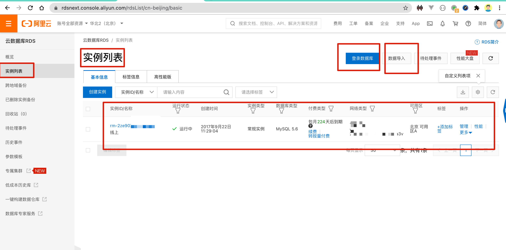
开发、运维小于、数据库
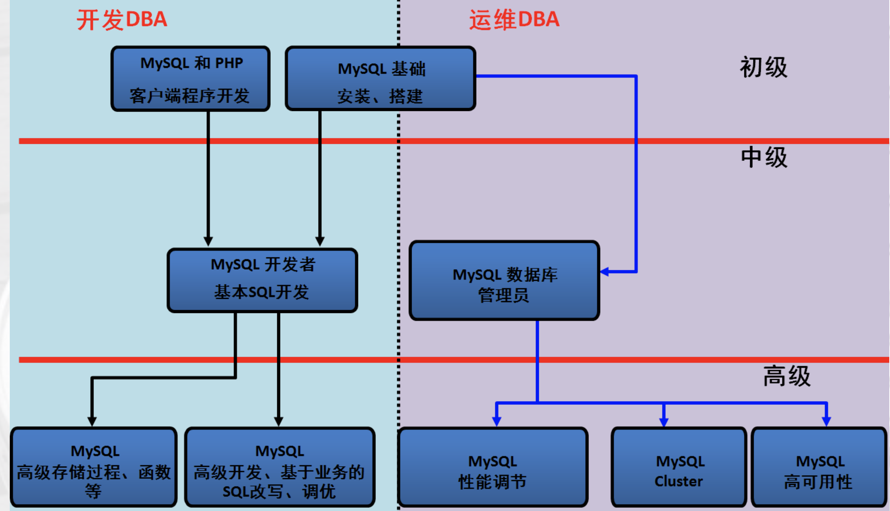
数据库在工作里怎么用
数据库和网站
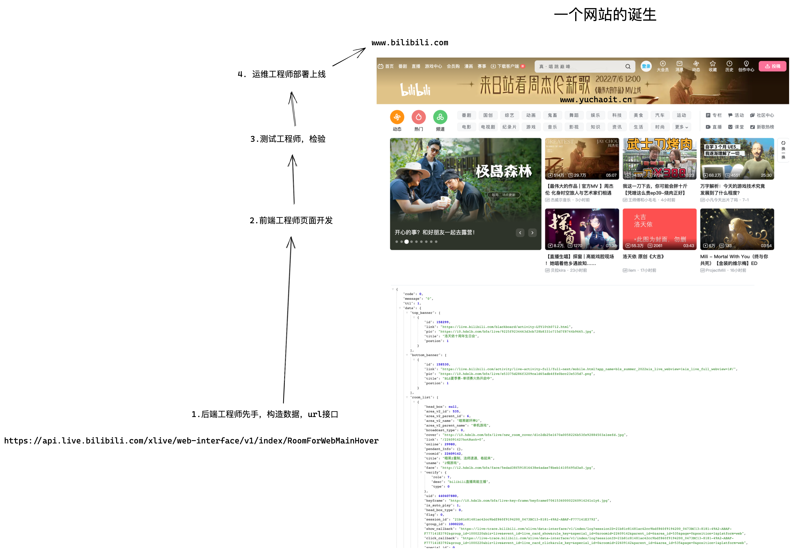
例如这个网站里的数据，就是通过前端+后端的代码，然后从数据库中读取出来的，这就好比之前超哥讲的lnmp架构。
简单地说，数据库（Database）就是一个存放计算机数据的仓库，该仓库按照一定的数据结构（数据结构是指数据的组织形式或数据之间的联系）对数据进行组织和存储，我们可以通过数据库提供的多种方法来管理其中的数据。
若以生活中的案例来进行更形象的描述，那么计算机里的数据库就是类似于人们存放杂物的储物间和仓库，它们的区别只是存放的东西不同，杂物间存放的是实体物件，而数据库里存储的是计算机数据。
数据库类别
目前主流数据库软件，分为两种
- 关系型数据库
- 非关系型数据库
为何出现这2种类型数据库
- web1.0时代，互联网发展慢，基本只是企业提供网站，用户浏览资料，上网的人还少，互联网还没那么多复杂的功能，网站压力很轻，因此mysql轻松干活
- 随着互联网Web2.0、Web3.0网站的兴起，传统的关系型数据库在应付这些网站，特别是对于规模日益扩大的海量数据，超大规模和高并发的微博、微信等类型的动态网站时已经显得力不从心，暴露了很多难以克服的问题，例如，传统关系型数据库的I/O瓶颈、性能瓶颈等都难以有效突破。于是出现了大批针对特定场景，以高性能、高并发以及使用便利为目的的功能特异化的数据库产品
- NoSQL出现，专注于解决高并发场景，大流量的场景，解决部分数据存读写的性能问题
- 非关系型数据库就是在这样的情景中诞生并得到非常迅速发展的。在这些特定的场景下，NoSQL数据库可以发挥出难以想象的高效率和高性能。近年来，NoSQL这个术语得到了广泛认同。
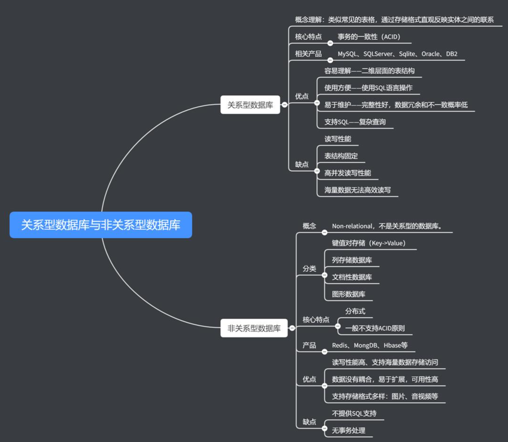
--
NoSQL是非关系型数据库的广义定义。它打破了长久以来关系型数据库与ACID理论大一统的局面。NoSQL数据库的数据存储不需要固定的表结构，通常也不存在连接操作。
其在大数据存取上具备关系型数据库无法比拟的性能优势，满足了企业应用需要将数据存储在横向且伸缩性上更强的功能需求。例如，Google的BigTable、Amazon的Dynamo都是非常成功的商业NoSQL实现。
在开源的NoSQL体系中，从早期的Memcached缓存软件到当今Facebook的Cassandra、Apache的HBase，都得到了广泛应用，redis、MongoDB等新兴的NoSQL数据库，也逐渐受到各类公司的欢迎和追捧。
NoSQL数据库没有标准的查询语言（SQL），因此进行数据库查询需要制定数据模型。许多NoSQL数据库都有REST式的数据接口或者查询API。
我们会先学习关系型数据库，mysql
之后再学习redis、非关系型数据库
关系型数据库
关系型数据库模型可将复杂的数据结构归结为简单的二元关系（即二维表格形式）
数据库的操作建立在一个、或者多个关系表格上，通过对这些表格进行分类、合并、连接等查询方式，来找到我们想要的数据。
最常见的数据库里是MySQL和Oracle。
来看一个生产环境下的数据库，以及数据表是什么样
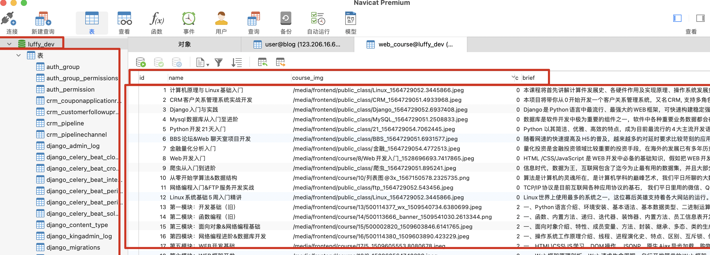
理解数据表的概念
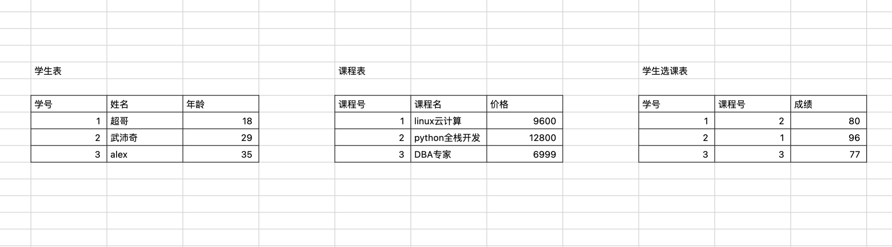
图解
大家可以这么去理解
- 数据库-----文件夹----文件夹名字（luffy_dev）
- 数据库里的数据表-----文件夹里的table数据表-----数据表的名字
- 数据表里的数据------文件中的数据-----例如一个excel里的数据
那么大家应该理解，最核心的就是数据表的理解
数据库里的表格，是由多干个列组成，每一列存储不同的信息。
数据表概念
列，是表中的字段，所有的表，都由一个、多个列组成
- 每一列（字段）都有对应的数据类型，且只能写入对应数据类型的内容，例如数字、文本、日期等（后面介绍）
- 由此我们就可以理解数据类型的概念了，数据类型用于定义每个列需要存储什么样的数据，每个列都可以根据存储数据的实际需要来设置数据类型，在指定数据类型的同时还可以指定存储数据的长度。
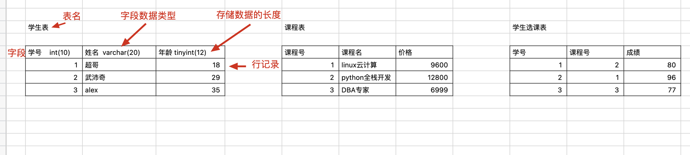
表
我们存放一件衣服，不会直接塞进柜子，一般都是有条有理的放在某一个格子中。
存放文件也是放入文件柜中，整整齐齐便于管理。
那在数据库领域中，文件被称为是表。表是一种结构化的文件，用于特定类型的数据。表可以存人员信息，商品信息，或者其他等等资料。
列
列存储表某一部分的信息。
列是表中的一个字段列。
所有表都是一个或多个列组成。
数据库中每个列都有对应的数据类型，如订单数是数值类型，日期、地址、介绍等英国是字符串类型。
数据类型帮助正确的排序数据。
行
表的数据按行存储，每条记录存储在自己的一行中。
也有人称作行(row)叫做数据库记录，最正确则是 行。
主键
这个键、在我们对数据表具体学习的时候，再去了解
每一行数据都应该有自己的一列唯一标识。
- 如学生名单的编号排列。
- 如订单表的订单ID号。
主键(primary key)一列(或一组列)，主键的值用于区分表中每一行。
表中的任意一列都可以作为主键，只需要保证：
- 1.任意两行都不具有相同的主键值
- 2.每个行都必须有一个主键值，不允许NULL值。
使用主键的技巧：
- 不更新主键列的值
- 不重用主键列的值
- 不在主键中使用可能会修改的值
外键
外键是表中某一列，它的值是另一张表的主键值，定义两个表之间的关系。
比如我们有工资表、员工表，那这工资表中肯定是一行行记录，对应了超哥的工资条呗。
SQL
SQL是结构化查询语言的缩写，读作S-Q-L或者sequel，全称是(Structured Query Language)，是一种专门用来与数据库交流的语言。
SQL语法主要是
- 查询语言：select
- 操作语言：insert、update、delete
- 事务处理：begin transaction、commit、rollback
- 权限控制：grant、revoke
- 数据库管理：create、drop
以上语法不区分大小写
MySQL/MariaDB
MySQL是一个开源的中小型关系型数据库管理系统，被应用于大、中、小型网站。由于其具有体积小、速度快、总体拥有成本低，且开放源码等特点，因此许多大中小型网站选择它作为网站数据库，从而降低网站总体拥有成本，甚至国内知名的淘宝网也选择弃用Oracle而更换成更为开放的MySQL。
MySQL数据库的应用范围主要包括互联网领域、大中小型网站、游戏公司、电商平台等，因用户广泛，其产生了很多高并发的成熟解决方案，因此传统企业的用户也在逐渐增多。
MariaDB
mariadb是mysql数据库的一个分支，主要由开源社区维护，采用GPL授权许可。
开发这个MariaDB数据库分支的可能原因之一是：Oracle公司收购了MySQL之后，有将MySQL闭源的潜在风险，因此MySQL开源社区采用分支的方式来避开这个风险。
开发MariaDB数据库的目的是完全兼容MySQL数据库，包括API和命令行，使之能够轻松地成为MySQL的替代品。在存储引擎方面，它使用XtraDB来代替MySQL的InnoDB。MariaDB由MySQL的创始人Michael Widenius主导开发，他早前曾以10亿美元的价格，将自己创建的公司MySQL AB卖给Sun，此后，随着Sun被甲骨文收购，MySQL的所有权也落入Oracle的手中。MariaDB数据库的名称来自MySQL的创始人Michael Widenius的女儿Maria的名字。
MariaDB基于事务的Maria存储引擎，替换了MySQL的MyISAM存储引擎，使用Percona的XtraDB替换了MySQL的InnoDB存储引擎。
MariaDB数据库的早期版本，均依照MySQL的版本发行。因此，使用MariaDB的人都会从MySQL中了解到MariaDB的相关功能，学习MySQL数据库的人，也可以轻松上手掌握MariaDB数据库。
其他关系型数据库
这里大家只需要了解有该数据库即可
- Microsoft SQL Server
- Microsoft Access
- PostgreSQL
- DB2
- Sysbase
- Informix
数据库具体应用场景
相亲网
譬如网站的注册登录功能，正确流程是，注册成功->可以登录。
工程师就要检测在注册成功后，检查数据库是否正确保留了信息。
如百合网的登录页面：
比如超哥想找个女朋友，果断去注册一个账号。。
以上数据，如果用Excel管理，存储每一条记录如下：
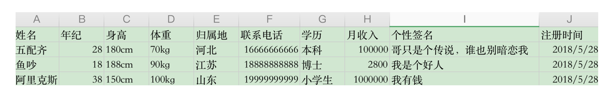
如用数据库管理软件(mysql)，如下:
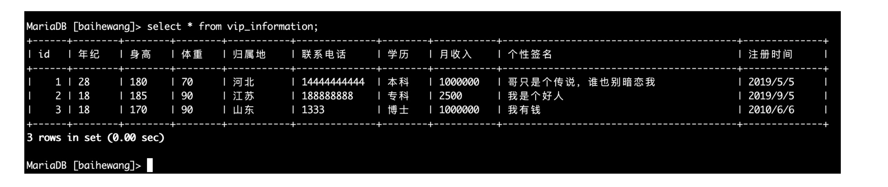
游戏数据库
如下是英雄联盟所有的英雄数据库，列出了所有英雄数据
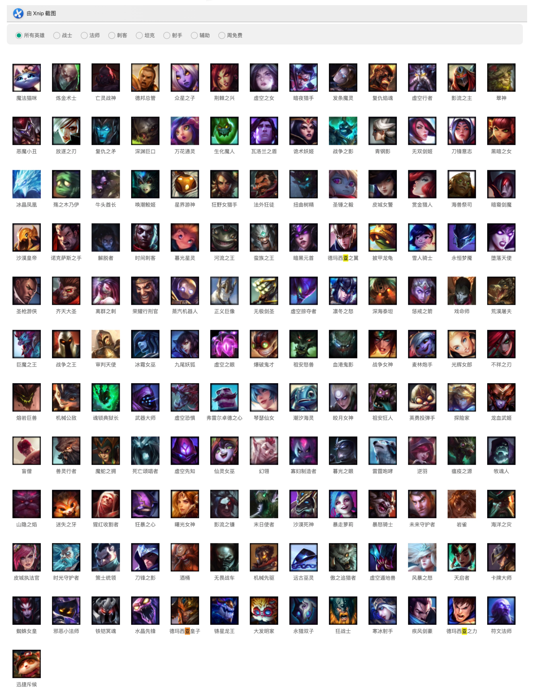
游戏玩法中默认将英雄分为战士、法师、刺客、坦克、射手、辅助几类，对应数据库设计如下：
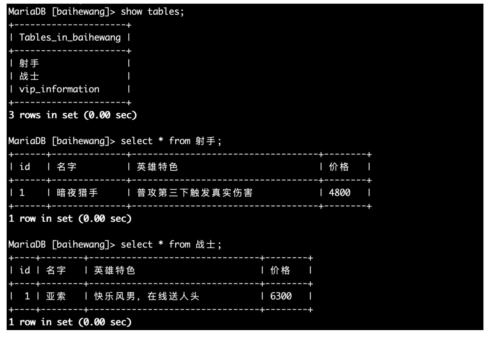
友情提醒
数据库方面知识，主要以运维、开发分为两个方向，不同的方向所重点学习的内容不一样
- 运维人员，主要是对数据库架构、设计、维护
- 单实例、多实例
- SQL语句基础CURD学习、权限管理
- 字符集、数据库引擎
- 备份方案
- 复制方案
- 高可用方案
- 开发人员，主要是对数据进行设计、开发
- 针对业务进行数据库设计、表结构设计
- 高性能索引
- 视图
- 存储过程
- 函数
- 等